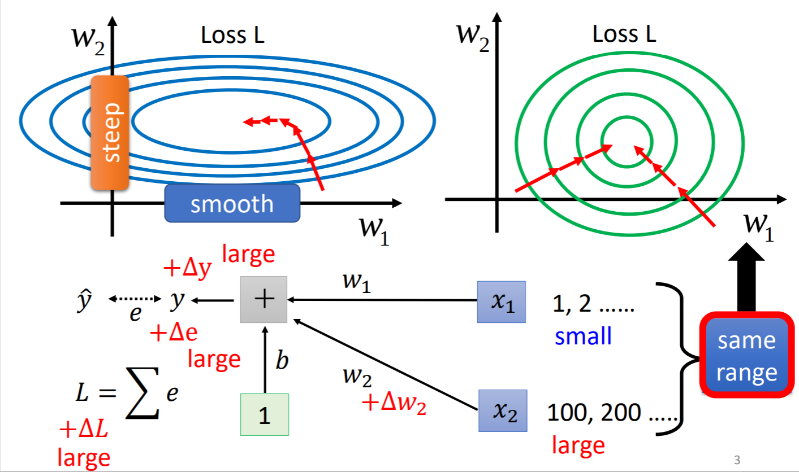
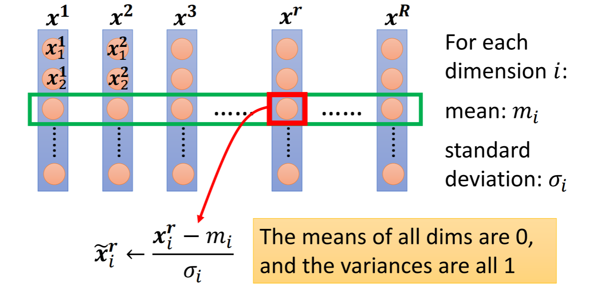
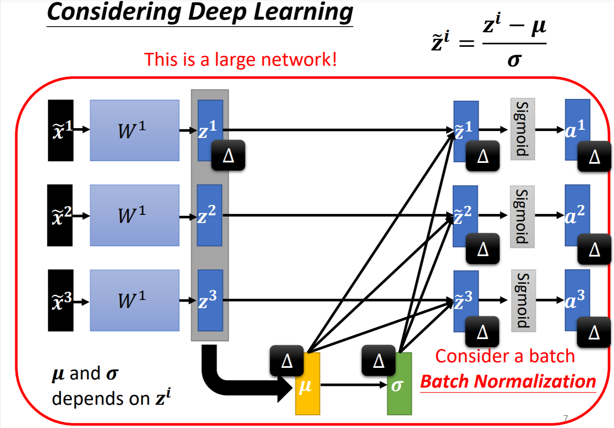
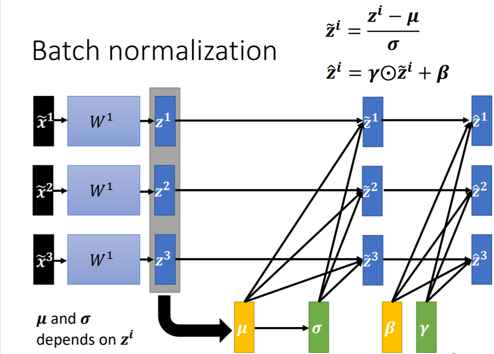

《Batch Normalization: Accelerating Deep Network Training by Reducing Internal Covariate Shift》
《How Does Batch Normalization Help Optimization?》
Batch Normalization
如果某个Error surface很崎岖不平，那么对train会造成很大的困难。使用Batch Normalization可以“铲平”error surface。
使用batch normalization可以让各个input统一到一个范围，这样可以使得error surface变得更加“平衡”，这对train有很大的帮助。

具体方法为：对于某一batch的data的第$i$个dimension的feature，计算其mean $m_i$以及standard deviation $\sigma_i$，然后对于该dimension的所有feature $x_i^r$：
进行完这一步后，该dimension上的数值均值为0，variance为1，即其分布都在0上下。对所有dimension进行normalization后，可以“制造”一个较好的error surface，能让train更快的收敛。

对于deep learning在经过一层neural network后，其feature的范围会发生变化，此时就需要再次进行normalization。
[scode type=”green”]其下一步可能要经过一层activate function，在activate function之前或之后做normalization都是可以的。[/scode]

在这种操作中，$\mu$和$\sigma$是由所有的$z$计算得到的，因此改变其中某个$z^i$，都会对其产生影响，进而会对所有$\widetilde{z}$产生影响。总结而言，在不进行Batch normalization的时候，每个example是独立计算、互不影响的，但进行了Batch Normalization后，某个example的会影响其他example，因为$\mu$和$\sigma$是共享的。相当于合并为了一个更大的network。
[scode type=”yellow”]使用Batch Normalization的时候，batch size一定要大。这样计算出来的$\mu$和$\sigma$才能更好的代表所有data。[/scode]
做完batch normalization后，还需要对每个$\widetilde{z}$乘以一个数，加上一个数，这个parameter是通过学习得到的。这样做后，可以使得$\widetilde{z}$的均值不为0。

[scode type=”yellow”]均值为0可能对训练产生影响[/scode]
[scode type=”green”]如果进行了这一步操作，那不就白做Batch Normalization了吗？
初始的时候，$\gamma$为1，$\beta$为0，因此初期并不会“白做”。到了训练后期，找到了一个较好的error surface后，$\gamma$和$\beta$才会显著增加。[/scode]
Batch Normalization for Testing(Inference)
test的时候，如果没有batch，那么解决方法是在training的时候计算moving average：
假设training的时候经历了$batch^1,batch^2,…,batch^t$，其均值分别为$\mu^1,\mu^2,…,\mu^t$那么计算完$batch^t$后，得到$\mu$的moving average为：
其中$p$为hyperparameter，在pytorch中默认为0.1。
同样，$\sigma$也是同样处理。使用$\bar{\mu}$和$\bar{\sigma}$去处理test data即可。
To Learn More
还有一些比较知名的normalization的方法：
Batch Renormalization
Layer Normalization
Instance Normalization
Group Normalization
Weight Normalization
Spectrum Normalization